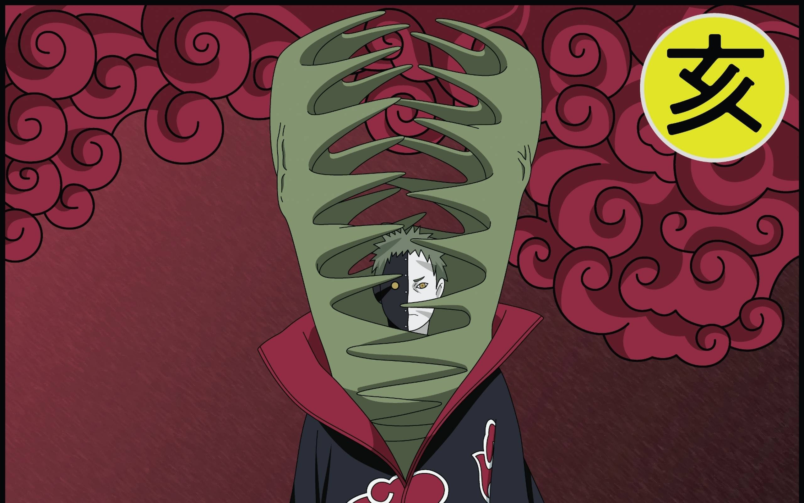

Inicio:
Zetsu (ゼツ, Zetsu) fue el espía y recolector de información de Akatsuki. Llevaba el anillo "Jabalí" (亥, I) en el meñique derecho. Estaba compuesto por dos mitades: Zetsu Blanco y Zetsu Negro, cada uno con personalidades y habilidades diferentes.
Historia:
Zetsu fue creado por Madara Uchiha como parte de su plan para revivir a Kaguya Ōtsutsuki. Zetsu Blanco fue creado a partir del cuerpo de Hashirama Senju, mientras que Zetsu Negro era la manifestación de la voluntad de Kaguya. Durante siglos, Zetsu manipuló eventos clave en el mundo shinobi para asegurar el regreso de Kaguya.

En Akatsuki, Zetsu sirvió como espía y recolector de información, infiltrándose en diferentes aldeas y manipulando a los miembros de la organización. Tras la Cuarta Guerra Ninja, Zetsu desapareció junto con Kaguya, dejando un legado de intriga y traición.

Habilidades:
Zetsu podía fusionarse con la naturaleza y moverse sin ser detectado, lo que lo convertía en un espía perfecto. Zetsu Negro era más agresivo y tenía habilidades de combate, mientras que Zetsu Blanco era más débil y servía como apoyo. Además, Zetsu podía absorber chakra y clonarse a sí mismo, lo que lo hacía un oponente difícil de derrotar.